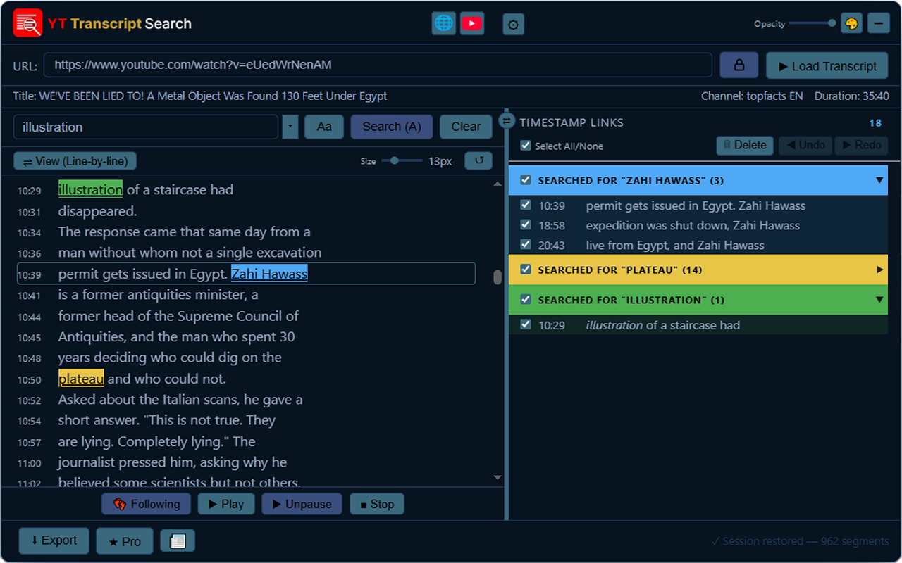

Hover any glowing dot on the interface to learn what it does Tap any glowing dot on the interface to learn what it does


Free and Pro
Pro only
Hover (or tap) any glowing dot on the interface to see what that control does.